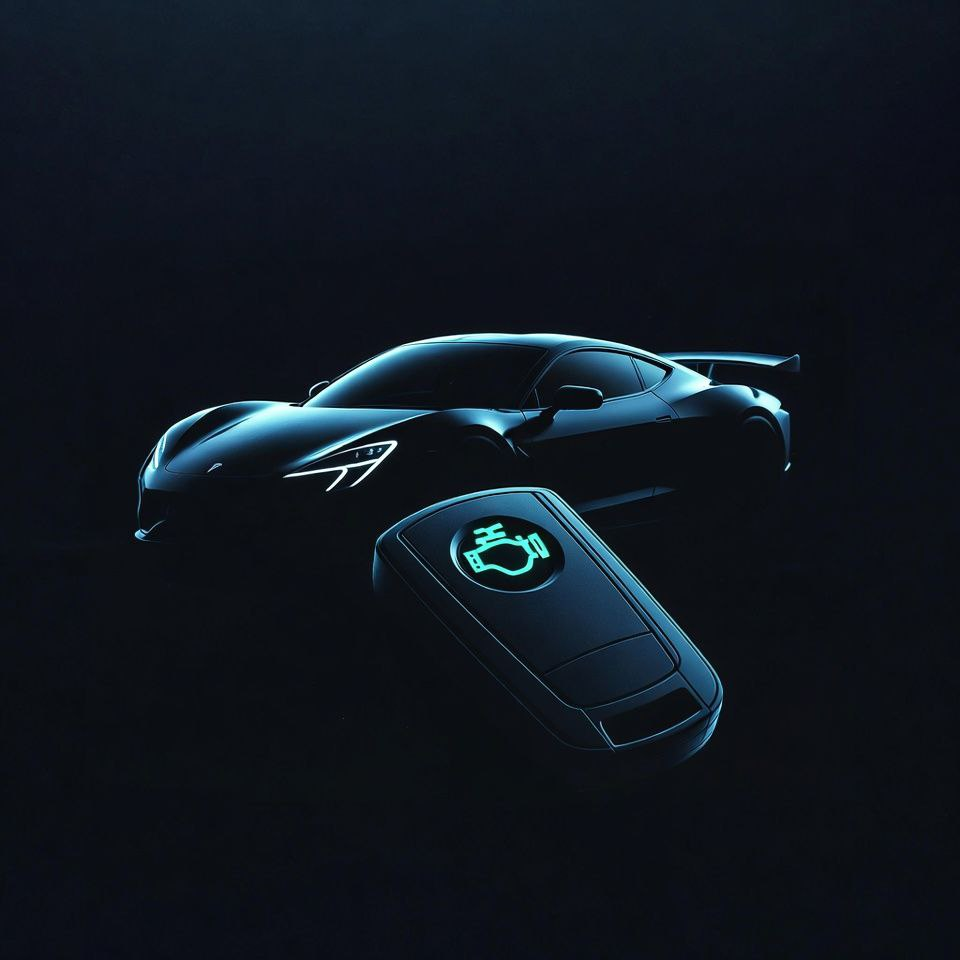

PROCORE INSIGHTS
BMW/Benz 鑰匙全丟怎麼辦？
原廠與外廠的「時間與費用」真實比較
🔍 救援指南
⏱️ 效率評估
💰 費用解析

「完了，鑰匙找不到了！」當您站在愛車旁邊，摸遍所有口袋卻一無所獲時，這絕對是車主最不願面對的噩夢。特別是駕駛 BMW、Mercedes-Benz 等高階進口車款，面對精密嚴格的防盜系統，許多車主腦中浮現的第一個念頭往往是：「只能花大錢回原廠處理了嗎？」
事實上，您有更聰明、更高效的選擇。本文將由「極致核心 ProCore」的視角，為您殘酷解構鑰匙遺失後，選擇「原廠待料」與「專業外廠救援」在時間、費用與風險上的真實差異。
痛點一：隱形的「高昂拖吊費」與「原廠模組更換」
當鑰匙全丟時，車輛不僅無法發動，車門鎖死、方向盤鎖定、電子手煞車也無法解除。這意味著您的車輛無法輕易移動。
- 原廠的處理方式： 必須先支付一筆特殊拖吊費用（如全載式拖車），小心翼翼地將車輛運回原廠。到了原廠後，為了防盜安全，通常會要求您更換整套防盜電腦模組與全車鎖仁。這是一筆動輒數萬、甚至十萬以上的龐大開銷。
- 極致核心的解決方案： 我們主打 「免拖吊、原地救援」。專業技師攜帶行動工作站直接進駐您的車輛所在地（無論是地下室、荒郊野外還是拍賣場）。透過 OBDII 或精密接線讀取數據，直接重構防盜資訊，省下拖吊費與更換電腦的鉅額成本。
痛點二：讓人抓狂的「漫長待料期」
對於每天需要通勤或跑業務的車主來說，時間就是金錢。「車子能多快發動？」是救援的最高準則。
- 原廠的處理方式： 為了安全管控，原廠通常需要將您的車籍資料送回德國總部審核，再由海外訂製專屬鑰匙並空運來台。這段期間，您的愛車只能靜靜躺在保修廠，等待期平均長達 2 至 4 週。這段期間的代步車費用與不便，難以估算。
- 極致核心的解決方案： 我們的目標是 「當日完工」。只要確認車主身分與車籍無誤，技師最快能在 1 至 2 小時內完成資料讀取、晶片寫入與金屬鑰匙切割。您不需要漫長等待，當場就能把車開走。
殘酷對決：原廠 vs. 極致核心 (ProCore)
| 評估項目 | 傳統原廠維修 | 極致核心 ProCore |
|---|---|---|
| 救援地點 | 必須拖吊至原廠廠區 | 現場原地施作 (免拖吊) |
| 處理時間 | 約 14 - 30 個工作天 (海外待料) | 約 1 - 2 小時 (當日發動) |
| 硬體更換 | 常需更換電腦模組與全車鎖頭 | 沿用原廠電腦，僅新增鑰匙 |
| 防盜安全性 | 極高 (原廠規範) | 極高 (註銷舊 ID，防止舊鑰匙盜用) |
| 總體費用 | 極高 (拖吊費 + 模組費 + 鑰匙費) | 合理透明 (僅收取解碼與鑰匙費) |
打破迷思：外廠會破壞車輛電腦嗎？
這是許多車主最大的擔憂。傳統的「開鎖店」可能因為設備老舊或技術不足而損壞昂貴的電子模組。但 極致核心 ProCore 採用的是與原廠同等級、甚至更高階的專用診斷與編程設備。我們透過安全的 OBDII 接口協議通訊，或是高標準的無損讀取技術進行數據重構，過程中提供穩壓電源保護，確保車輛電腦萬無一失。